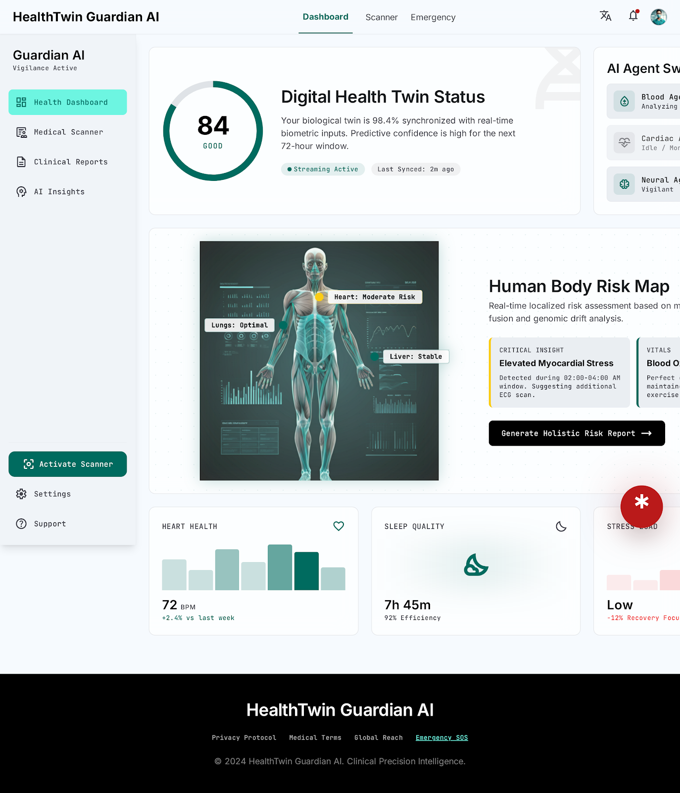

Your AI health twin, ready to protect every health decision.
HealthTwin Guardian AI combines a synchronized biometric dashboard, agent-based medical explanation, medicine safety checks, and a paramedic-ready emergency card in one static demo experience.

Demo Modules
Explore the core clinical workflows in the Guardian suite, from proactive monitoring to emergency handoff.
Interactive Dashboard
Vitals, body risk map, family monitoring, report simulation, scanner, chat, and SOS controls.
Blood Panel Explainer
Interactive biomarker sliders translate lab values into a plain-language Health Twin score.
Emergency SOS Card
Paramedic-first identity, allergy, medication, contact, and QR-access layout.
Secure Login Flow
Clinical sign-in with password, biometric simulation, and a 2FA setup handoff.
Built Around Clinical Urgency
The demo keeps the interface dense enough for repeated use while still making high-risk actions obvious: emergency mode, report analysis, medicine scanning, and agent activity are all reachable without hunting.


Website Flow
A complete product journey connects public discovery, clinical authentication, live monitoring, explanation, and emergency response.
Start with the product overview and choose the clinical path.
Use the clinical login and 2FA screens for the security story.
Inspect synchronized vitals, risk panels, family status, and agents.
Adjust lab values and watch the health score change.
Switch to the paramedic-facing SOS card when urgency matters.